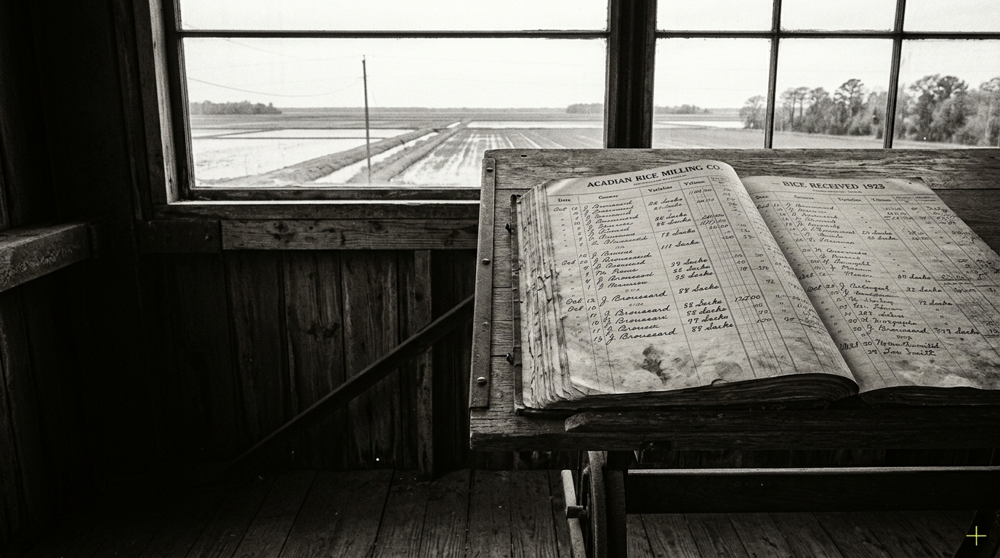
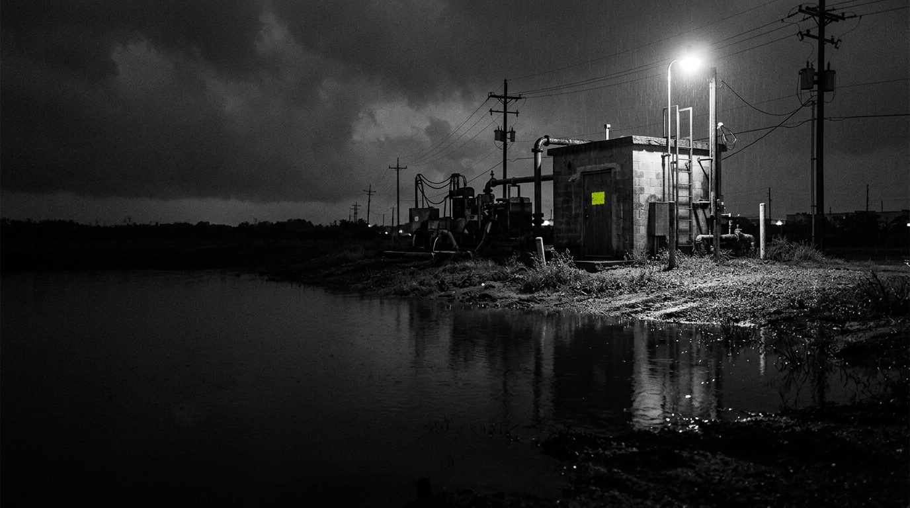
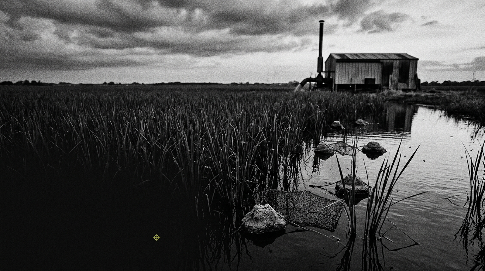

Crowley Modernism
Rice, oil, levees, and a modernism assembled from pumps, invoices, and wet heat.




Rice, oil, levees, and a modernism assembled from pumps, invoices, and wet heat.
A refusal of the South as soft-focus inheritance and decorative ruin.
A machine runs through the night while the water keeps its own account.
A convenience store, a tropical depression, and a debt nobody remembers taking on.
Eight lines filed between a pump house, a trap line, and a hymn.
A sequence for water, machinery, and voices carried across a field.
Names, bags, weights, grades, and remarks from the machinery of account.
A weather record made from light, standing water, and the edge of a crop.